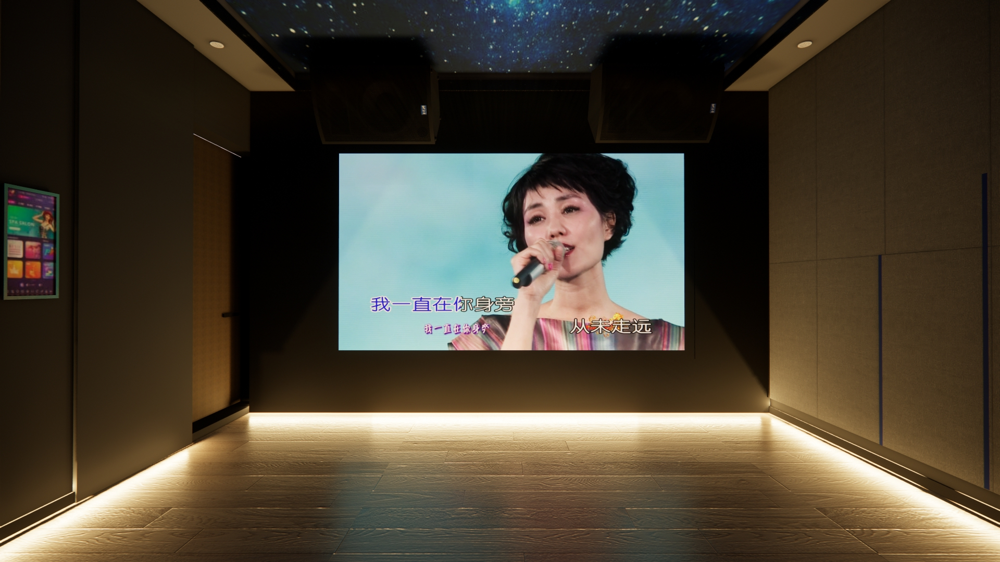
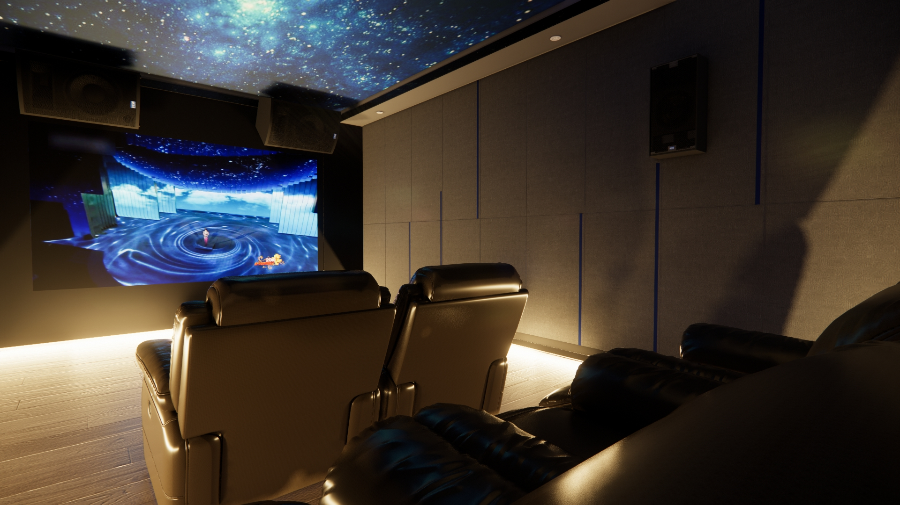
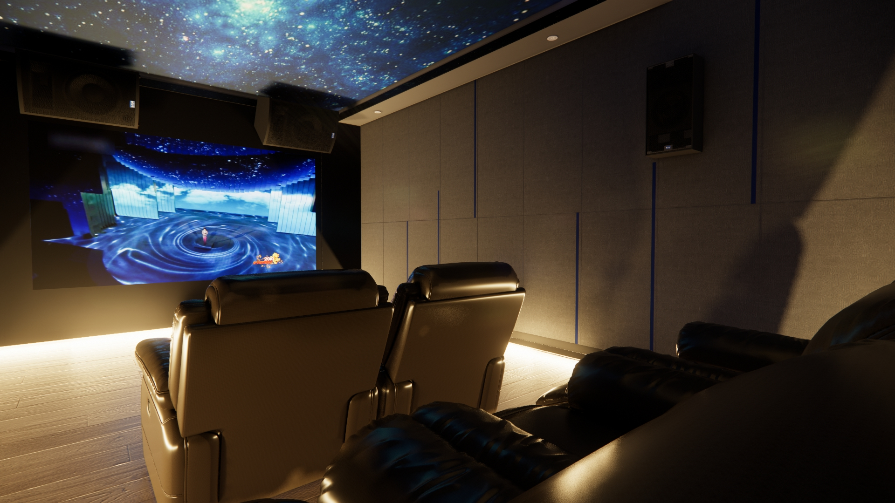
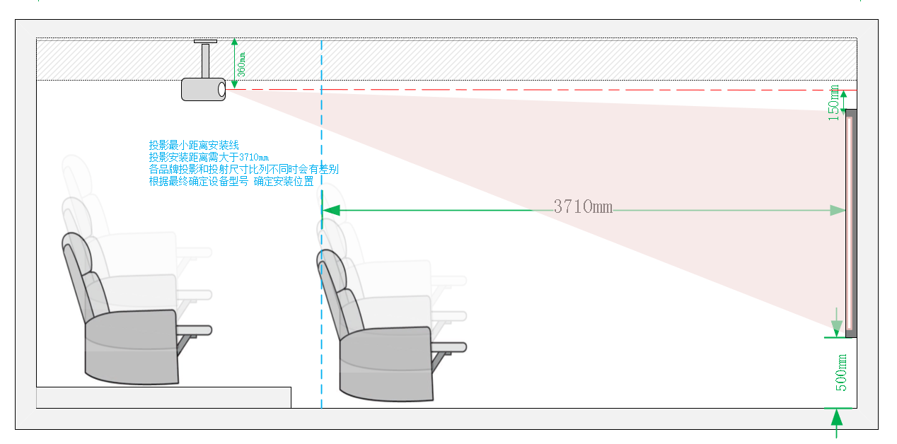
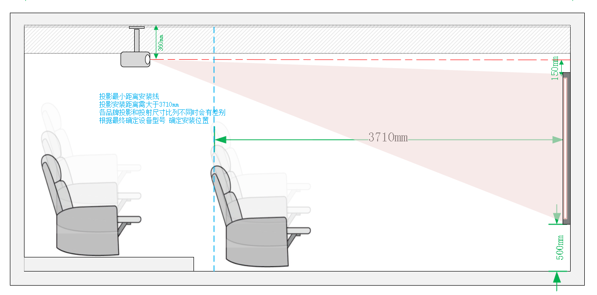
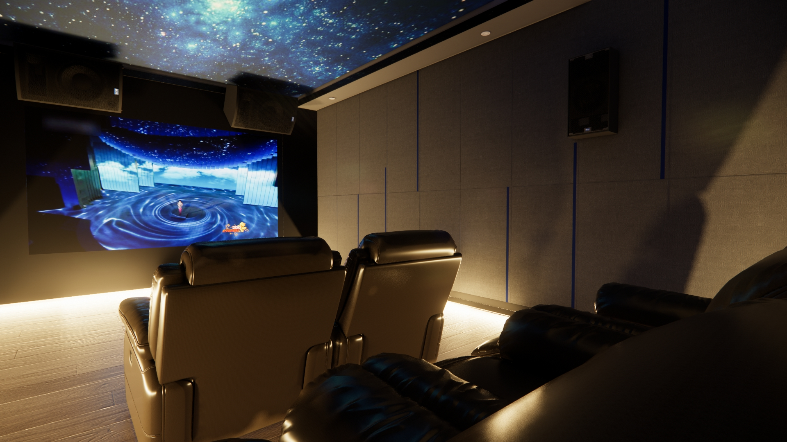
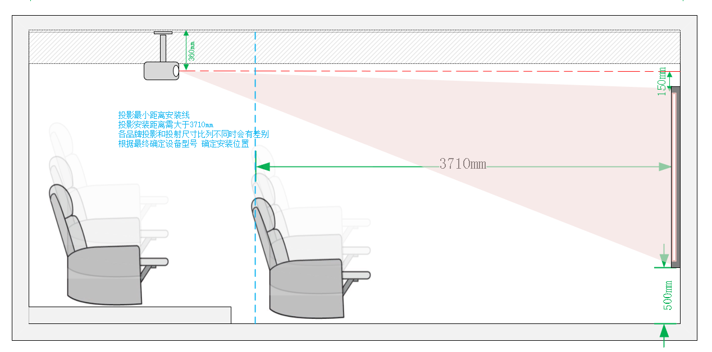

家庭影院效果图
Home Theater Gallery
 

 

打造沉浸式影音体验，给您带来震撼的视听享受
Creating an immersive audio-visual experience for you
💡 家庭影院设计 | 🔊 家庭KTV | 🎬 影音房方案设计
💡 Home Theater Design | 🔊 Karaoke Audio | 🎬 Audio-Visual Room Design
家庭影院音质标准
Home Theater Sound Quality Standards
清晰的对白、沉浸式的环绕效果、均衡自然的音调、宽广的动态范围、声音与画面完美融合、每个座位都是最佳聆听位置。
Clear dialogue, immersive surround effects, balanced and natural tones, wide dynamic range, perfect integration of sound and picture, every seat is the best listening position.
家庭影院环境中，常见的噪音来源包括空调、投影机、邻室的水泵或其他设备噪声。通过专业的隔音降噪处理，可以有效阻挡这些干扰，让观影和听音体验更加纯粹，沉浸于影音的震撼之中。
In home theater environments, common noise sources include air conditioning, projectors, neighboring room water pumps, or other equipment noise. Professional soundproofing and noise reduction treatments can effectively block these disturbances, making the viewing and listening experience more pure and immersive.
优化声场，让器材性能充分发挥
再好的音响设备，如果没有合理的声学优化，声音表现也难以达到理想状态。专业的声学处理能让系统发挥出应有的水准，让声音更加纯净、自然、富有层次感。
Optimize the sound field to fully utilize the performance of the equipment
Even the best audio equipment, without proper acoustic optimization, will struggle to achieve ideal sound performance. Professional acoustic treatment allows the system to perform at its best, making the sound purer, more natural, and layered.
提升影音体验，让投入更有价值
购买优质音响设备只是第一步，要让整个影院空间真正呈现出惊艳的音质，必须结合专业的声学设计。就像打造一座精美的花园，我们不仅要让百花齐放，更要让四季芬芳萦绕，让每一刻的视听体验都充满震撼与享受。
Enhance the audio-visual experience, making the investment more valuable
Purchasing high-quality audio equipment is only the first step. To truly present stunning sound quality in the entire theater space, professional acoustic design must be integrated. Just like creating a beautiful garden, we not only want a variety of flowers to bloom but also to have the fragrance linger throughout the seasons, making every moment of the audio-visual experience full of shock and enjoyment.
自客户签订合同之日起，我们将严格监督项目的各项进展，实地检查施工与安装的每个环节，确保施工现场服务质量达到标准。我们致力于消除您的后顾之忧，让您享受高质量的服务体验。
From the day the customer signs the contract, we will strictly supervise all aspects of the project, conduct on-site inspections of each construction and installation phase, and ensure that the service quality on-site meets standards. We are committed to eliminating your concerns and providing you with a high-quality service experience.
在项目实施过程中，项目经理将全程跟踪服务，确保每一个细节都被精准把控，为您提供一站式、贴心的服务体验。
During the project implementation, the project manager will provide full tracking service, ensuring that every detail is precisely controlled, offering you a one-stop, thoughtful service experience.


专业家庭影院定制，打造沉浸式影音体验。
Professional home theater customization, creating an immersive audio-visual experience.
📞 电话：(+61) 400 123 456
📞 Phone: (+61) 400 123 456
📧 邮箱：BZheng@EchoSpace.com.au
📧 Email: BZheng@EchoSpace.com.au